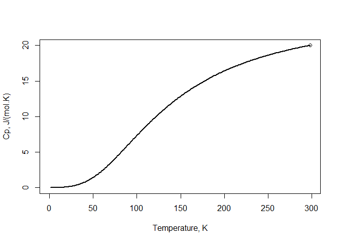

The 2 1/2th Calphad model is capable of extrapolating the Heat capacity (Cp) and Entropy (S) descriptions from the room temperature down to 0 K very accurately, using only two input parameters: The heat capacity and Entropy values at room temperature (Cp298, S298).
Installation
You can install the released version of Calphad2.5 from CRAN with:
install.packages("Calphad2.5")Additional linear Cp Solution: Example of Pure Al
library(Calphad2.5)
Calculate("Al", CP298 = 24.209, S298 = 28.275)
#> , , Model output:
#>
#> Input value Model Result
#> CP_298.15 24.209 24.21027
#> S_298.15 28.275 28.29019
#>
#> , , Model parameters:
#>
#>
#> Debye_Temp. 4.021000e+02
#> a1_parameter_(Temp._Dependent_solution) 0.000000e+00
#> b1_parameter_(Temp._Dependent_solution) 0.000000e+00
#> b'_parameter_(Linear_Cp_solution) 4.681564e-03
#> Number of atoms 1.000000e+00
#>
#> , , polynomial_function_parameters:
#>
#>
#> a1 0.000000e+00
#> b1 6.103385e-06
#> c1 -8.659786e-06
#> d1 3.220496e-05
#> e1 -2.250219e-07
#> f1 9.176988e-09
#> g1 -1.337226e-10
#> a2 -3.011278e+01
#> b2 6.633422e-01
#> c2 -3.571942e-03
#> d2 9.258603e-06
#> e2 -9.346278e-09
#> f2 3.278018e+02
#> g2 3.830358e+03Calculate and Plot Heat capacity and Entropy
library(Calphad2.5)
# Calculate Heat capacity (Cp)
Temp <- seq(1,298.15,1)
Cp <- calculate_Cp(Temp = Temp, compound = "Al", CP298 = 24.209, S298 = 28.275)
# Plot Heat capacity (Cp)
plot(Temp,Cp,type="line", lwd=2, xlab = "Temperature, K", ylab = "Cp, J/(mol.K)")
# plot Heat capacity (Cp) value at 298 to compare
points(298.15, 24.209)
# Calculate Entropy (S)
S <- calculate_S(Temp = Temp, compound = "Al", CP298 = 24.209, S298 = 28.275)
# Plot Entropy (S)
plot(Temp,S,type="line", lwd=2, xlab = "Temperature, K", ylab = "S, J/(mol.K)")
# plot Entropy (S) value at 298 to compare
points(298.15, 28.275)Temperature dependent Debye temperature solution: Example of Pure Si
library(Calphad2.5)
Calculate("Si", CP298 = 20, S298 = 18.82)
#> , , Model output:
#>
#> Input value Model Result
#> CP_298.15 20.00 20.00000
#> S_298.15 18.82 18.82345
#>
#> , , Model parameters:
#>
#>
#> Debye_Temp. 641.7186284
#> a1_parameter_(Temp._Dependent_solution) 531.2500000
#> b1_parameter_(Temp._Dependent_solution) 0.3705136
#> b'_parameter_(Linear_Cp_solution) 0.0000000
#> Number of atoms 1.0000000
#>
#> , , polynomial_function_parameters:
#>
#>
#> a1 0.000000e+00
#> b1 7.299323e-07
#> c1 -9.121419e-07
#> d1 1.318048e-05
#> e1 -4.587642e-08
#> f1 7.098287e-10
#> g1 -8.553738e-12
#> a2 -5.382537e+01
#> b2 6.848982e-01
#> c2 -2.930307e-03
#> d2 6.316738e-06
#> e2 -5.477840e-09
#> f2 1.863324e+03
#> g2 -2.414895e+04Calculate and Plot Heat capacity and Entropy
Temp dependent solution:
library(Calphad2.5)
# Calculate Heat capacity (Cp)
Temp <- seq(1,298.15,1)
Cp <- calculate_Cp(Temp = Temp, compound = "Si", CP298 = 20, S298 = 18.82)
# Plot Heat capacity (Cp)
plot(Temp,Cp,type="line", lwd=2, xlab = "Temperature, K", ylab = "Cp, J/(mol.K)")
# plot Heat capacity (Cp) value at 298 to compare
points(298.15, 20)
# Calculate Entropy (S)
S <- calculate_S(Temp = Temp, compound = "Si", CP298 = 20, S298 = 18.82)
# Plot Entropy (S)
plot(Temp,S,type="line", lwd=2, xlab = "Temperature, K", ylab = "S, J/(mol.K)")
# plot Entropy (S) value at 298 to compare
points(298.15, 18.82)